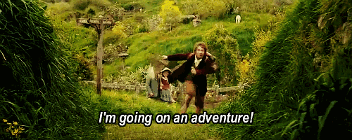
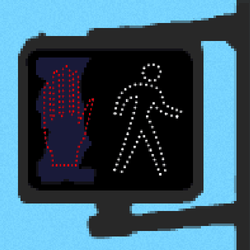
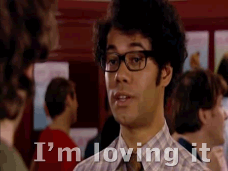
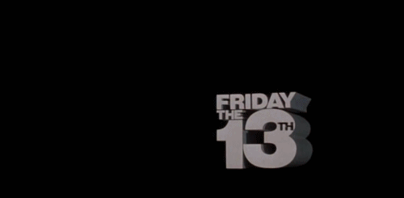
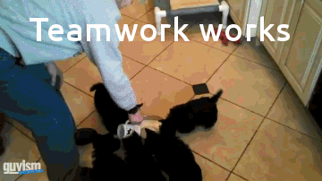
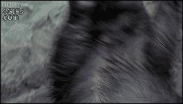

Een Nieuwe Avontuur
Beste QDelfters...
Zoals jullie misschien al gehoord hebben, ga ik binnenkort weg bij QDelft om een nieuwe uitdaging aan te durven.
Ik ga werk doen voor Tenon.io, een bedrijf die zich toespitsen op webtoegankelijkheid.
Bij QDelft heb ik samen met super mensen aan vele leuke projecten gewerkt. En daarvoor wil ik jullie allemaal bedanken!
Mijn laatste dag bij QDelft is vrijdag 13 juli. Jaaaaa... vrijdag de 13de! Dun dun dun....
Wanneer is dat precies? Hier is mijn "Final QDelft Countdown":
Jullie zijn allemaal super collega's!!!
En dan kan ik natuurlijk niet weggaan zonder om minstens nog één keer een honeybadger te laten zien!
